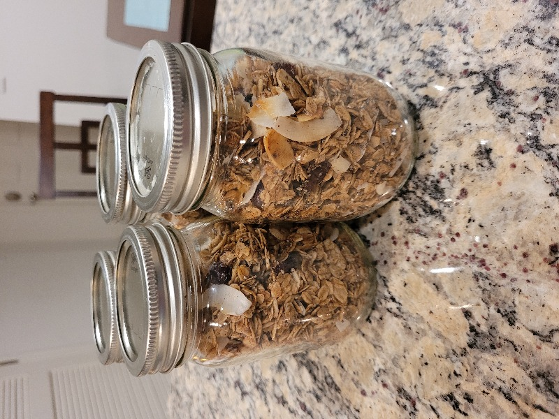

Granola

#recipe #recipe/handsoff
Prep: 15 mins
Cook: 25 mins
Ingredients
(ratio is ~6:1 dry:wet)
Dry
- oats, 4 cups
- almond slivers, 1 cup
- chia seeds, 1/4 cup
- salt, 1 tsp (little too much?)
- cinnamon, 2-3 tsp
- nutmeg, ~1/4-1/2 tsp
Wet
- maple syrup, 1/2 cup
- coconut oil (liquid), 1/2 cup
- vanilla, 2 tsp
Other
- any sort of dried fruit! (e.g. 1/2 cup raisins)
- coconut (e.g. 1/2 cup)
Instructions
- Add dry ingredients to a bowl, and wet ingredients to another bowl, stir each
- Combine wet and dry and stir
- Cover a cookie sheet w parchment paper
- Pour combo onto sheet and spread
- Bake at 350 for 20 minutes
- Add other ingredients and bake for 5-8 more minutes
- Let cool for 5 or so mins before jarring
Notes
If you use nutmeg, go easy!!! Def not more than .5 tsp